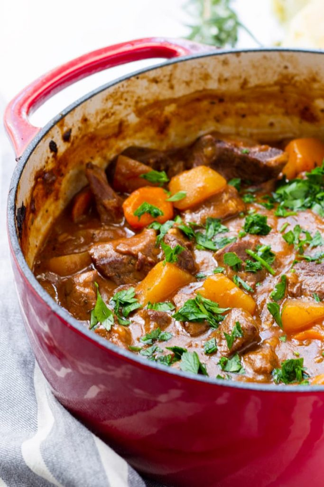

Beef Stew

Delicious dutch oven beef stew
This recipe is our first ever recipe made in our new dutch oven. It takes a few hours total to make but is totally worth it.
Ingredients
Steps
Sear beef in bottom of dutch oven on high heat.
Remove beef from pot and add onions and carrots.
Add beef broth and tomato paste and bring to a bool.
Add back beef and put in oven at 375 for 2 hours. After 1 hour add potatos.
At 2 hour mark, remove from the oven and salt and pepper to taste.